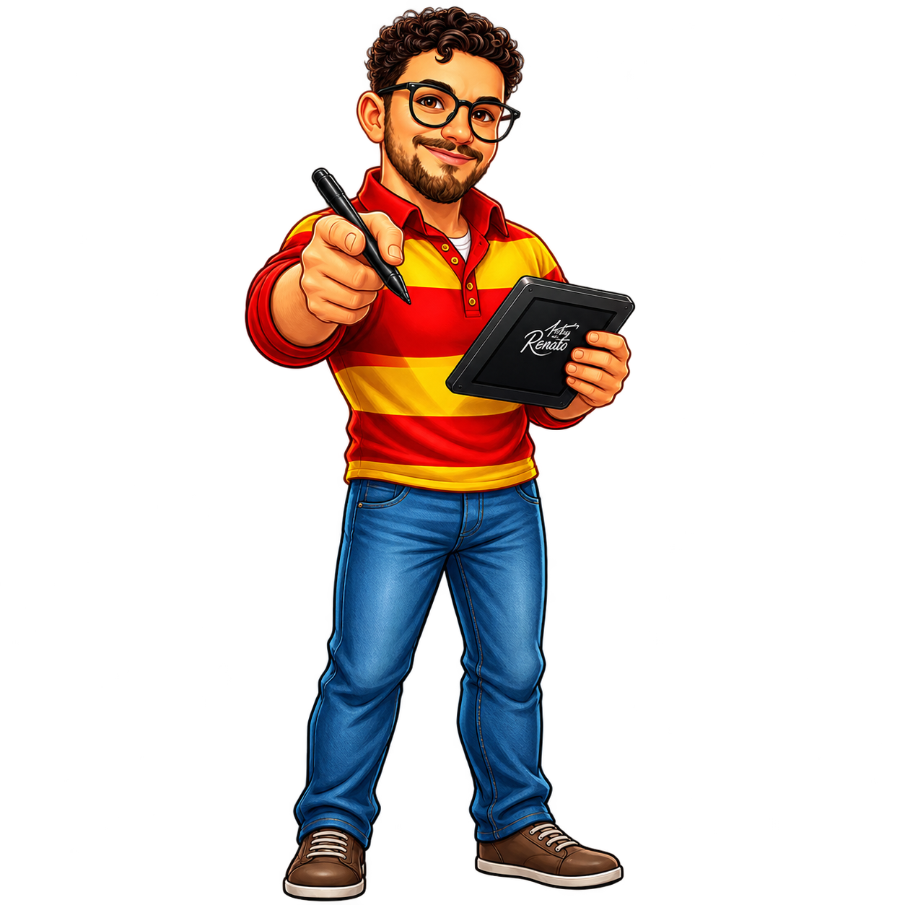

Tradição e Legado
Minha História
Eu sou Moises CamarSan, filho de Eda e Dilino. Minha história com as alianças de moedas antigas começou ainda na infância, quando eu observava meu pai transformar moedas em peças únicas, de maneira rústica, artesanal e cheia de significado.
Naquela época, nossa família vivia na zona rural, no interior de Barros Cassal, no Rio Grande do Sul. Meu pai era agricultor, mas também dedicava parte do seu tempo a um ofício que realizava com muito carinho: a fabricação de alianças a partir de moedas antigas.
Pessoas de diferentes lugares percorriam longas distâncias para levar suas moedas até ele. Para muitos clientes, aquelas alianças representavam muito mais do que uma joia: eram presentes únicos, personalizados e carregados de significado, escolhidos para marcar o início de uma nova história e selar momentos importantes de suas vidas.
 As origens na roça e o trabalho artesanal
As origens na roça e o trabalho artesanal
Enquanto eu crescia, acompanhava aquele trabalho e, mesmo sem perceber, começava a aprender os primeiros detalhes de uma tradição que mais tarde faria parte da minha própria trajetória.
Com o passar dos anos, saí da zona rural, fui estudar e me mudei para a cidade. Diante das dificuldades para encontrar meu espaço no mercado de trabalho, comecei a olhar para aquilo que havia aprendido com meu pai de uma maneira diferente.
Percebi que aquele conhecimento, que durante tantos anos fez parte da nossa família, poderia se transformar em um novo caminho profissional. Foi então que me tornei artesão.
Desde 2019, em Caxias do Sul, dedico-me à produção de alianças de moedas antigas, preservando os ensinamentos que recebi do meu pai e, ao mesmo tempo, desenvolvendo meu próprio estilo e aperfeiçoando cada etapa do processo.
 A dedicação e o trabalho artesanal em Caxias do Sul
A dedicação e o trabalho artesanal em Caxias do Sul
Cada aliança CamarSan é produzida artesanalmente e possui características próprias. Mais do que transformar uma moeda em uma aliança, meu propósito é transformar uma peça que já carrega uma história em um novo símbolo, destinado a acompanhar a história de outra pessoa.
Em 2024, meu pai faleceu em decorrência de problemas renais. Sua partida deixou uma grande saudade e foi uma perda profunda para toda a nossa família. Mas aquilo que ele me ensinou permanece vivo.
Hoje, cada peça que forjo carrega um pouco dessa história: o conhecimento que recebi, os valores que aprendi e a memória de um homem que transformava simples moedas em símbolos de amor e compromisso.
A CamarSan nasceu dessa herança e continua sendo construída todos os dias com dedicação, cuidado e respeito à tradição.
"Forjadas para contar histórias e perpetuar gerações."
 Peças únicas forjadas artesanalmente
Peças únicas forjadas artesanalmente

Moises CamarSan — Artesão Fundador